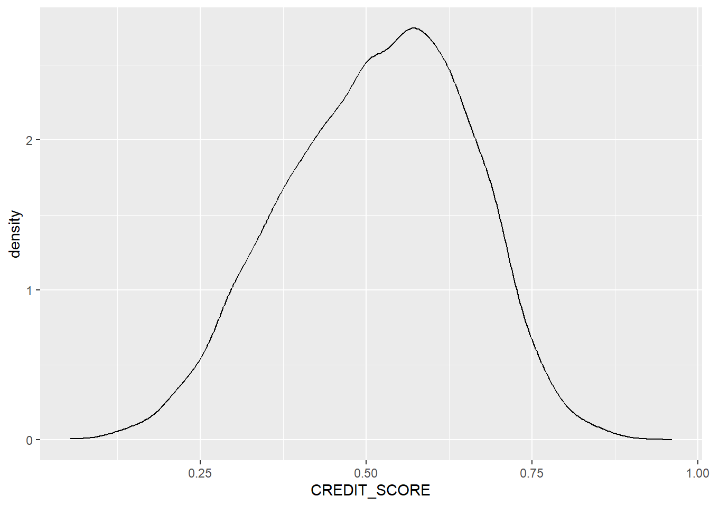
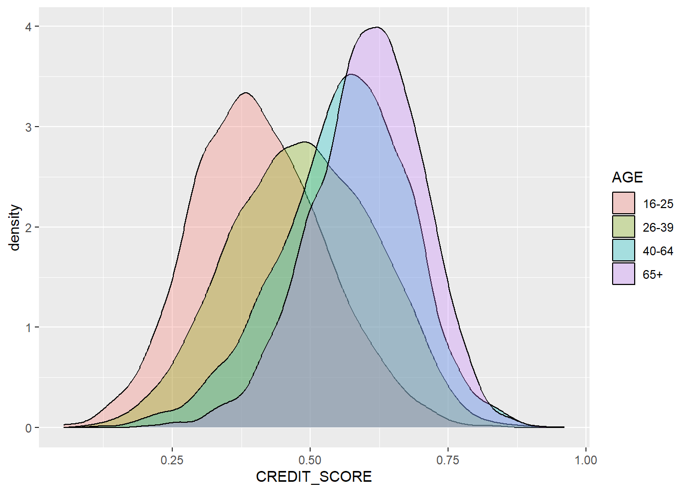
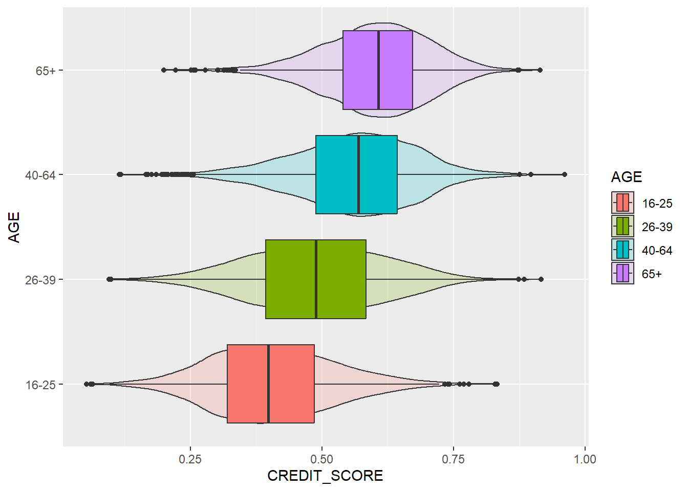

Ez a fejezet az R alapvető statisztikai eszköztárának bemutatásáról szól, amit feltáró adatelemzésként (“Explorative Data Analysis”) ismerünk. Mivel a mutatók a standard egyetemi statisztika oktatás részét képezik, ezért külön módszertani magyarázatot nem fűzünk az indikátorokhoz. A fejezet másik részében megismertetjük az Olvasót az adatvizualizációs lehetőségekkel a ggplot2 nevű modul felhasználásával.
4 Bevezetés a következtetéselméleti vizsgálatokba
A következtetéselmélet célja, hogy a mintából olyan következtetéseket vonjunk le, amely segítségével a populációra vonatkozó állításokat ellenőrizhetünk. Ezeket az állításokat hipotézisként kell megfogalmazni, ideális esetben még a vizsgálat előtt. Univariáns esetben ez a hipotézis jellemzően a populáció egy attribútumának momentumára vonatkozik, legjellemzőbben a centrális tendenciára, vagy más néven a várható értékre. Ebben az esetben természetesen feltételeznünk szükséges, hogy a vizsgált változónak létezik eloszlása, még ha nem is tudjuk pontosan, csupán feltételezzük ennek az eloszlásnak a típusát. Multivariáns esetben a megfogalmazott hipotézis már a változók közötti asszociációra (például korreláció, regresszió) vonatkozik.
A megfogalmazható hipotézis alapvetően a változó típusától függ:
Folytonos változók esetén: a momentumokra, valamint a feltételezett értéktől való eltérésre.
Diszkrét változók esetén: amennyiben a távolság értelmezhető a megfigyelések között (például Poisson-eloszlásból származó adatok esetén), úgy a fentebb leírtak becsülhetők.
Nominális (faktor) változók esetén: a távolság ekkor nem értelmezhető, csupán gyakoriság számolható, hipotézisvizsgálat legalább kétváltozós kiterjesztés szükséges.
4.1 Hipotézisek folytonos változók esetén (univariáns)
A hipotézis a populáció valós eloszlására vagy annak egy paraméterére vonatkozó kijelentés. Vagyis léteznek olyan \(x_i\in P_0 \subseteq p\) megfigyelések, amelyekre a kijelentés igaz. A hipotézisvizsgálat ennek ellenőrzését jelenti. A következőkben ezeket tekintjük át.
Mindenekelőtt azonban töltsük be az adatbázisunkat. Az adatok forrás a Kaggle adatbázisa. A változók többsége magától értetődő, csupán két változó értelmezése definiálandó:
DUIS (“Driving Under Influence”): történt-e a múltban alkohol vagy más bódító hatású készítmény által befolyásolt vezetés?
Outcome: Volt-e benyújtott kárigénye az ügyfélnek?
Rows: 10000 Columns: 19
── Column specification ────────────────────────────────────────────────────────
Delimiter: ","
chr (8): AGE, GENDER, RACE, DRIVING_EXPERIENCE, EDUCATION, INCOME, VEHICLE_...
dbl (11): ID, CREDIT_SCORE, VEHICLE_OWNERSHIP, MARRIED, CHILDREN, POSTAL_COD...
ℹ Use `spec()` to retrieve the full column specification for this data.
ℹ Specify the column types or set `show_col_types = FALSE` to quiet this message.
4.1.1 Adattípusok leíró statisztikája
Az adatok típusáról az str() függvény nyújt bővebb információt, de ugyanezekhez az adatokhoz juthatunk, ha változólistában lenyitjuk a változóhoz tartozó menüt.
Láthatjuk, hogy numerikus és string (chr) típusú adataink vannak. Ez utóbbiakat faktorokként tudjuk kezelni. Ezekről az adatokról szeretnénk egy átfogó képet kapni. A numerikus adatokra vonatkozóan a momentumokra tudunk becsléseket kérni, a kategórikus (faktor) adatokra nézve pedig gyakoriságokat.
summary(car_insur)
ID AGE GENDER RACE
Min. : 101 Length :10000 Length :10000 Length :10000
1st Qu.:249639 N.unique : 4 N.unique : 2 N.unique : 2
Median :501777 N.blank : 0 N.blank : 0 N.blank : 0
Mean :500522 Min.nchar: 3 Min.nchar: 4 Min.nchar: 8
3rd Qu.:753975 Max.nchar: 5 Max.nchar: 6 Max.nchar: 8
Max. :999976
DRIVING_EXPERIENCE EDUCATION INCOME CREDIT_SCORE
Length :10000 Length :10000 Length :10000 Min. :0.05336
N.unique : 4 N.unique : 3 N.unique : 4 1st Qu.:0.41719
N.blank : 0 N.blank : 0 N.blank : 0 Median :0.52503
Min.nchar: 4 Min.nchar: 4 Min.nchar: 7 Mean :0.51581
Max.nchar: 6 Max.nchar: 11 Max.nchar: 13 3rd Qu.:0.61831
Max. :0.96082
NAs :982
VEHICLE_OWNERSHIP VEHICLE_YEAR MARRIED CHILDREN
Min. :0.000 Length :10000 Min. :0.0000 Min. :0.0000
1st Qu.:0.000 N.unique : 2 1st Qu.:0.0000 1st Qu.:0.0000
Median :1.000 N.blank : 0 Median :0.0000 Median :1.0000
Mean :0.697 Min.nchar: 10 Mean :0.4982 Mean :0.6888
3rd Qu.:1.000 Max.nchar: 11 3rd Qu.:1.0000 3rd Qu.:1.0000
Max. :1.000 Max. :1.0000 Max. :1.0000
POSTAL_CODE ANNUAL_MILEAGE VEHICLE_TYPE SPEEDING_VIOLATIONS
Min. :10238 Min. : 2000 Length :10000 Min. : 0.000
1st Qu.:10238 1st Qu.:10000 N.unique : 2 1st Qu.: 0.000
Median :10238 Median :12000 N.blank : 0 Median : 0.000
Mean :19865 Mean :11697 Min.nchar: 5 Mean : 1.483
3rd Qu.:32765 3rd Qu.:14000 Max.nchar: 10 3rd Qu.: 2.000
Max. :92101 Max. :22000 Max. :22.000
NAs :957
DUIS PAST_ACCIDENTS OUTCOME
Min. :0.0000 Min. : 0.000 Min. :0.0000
1st Qu.:0.0000 1st Qu.: 0.000 1st Qu.:0.0000
Median :0.0000 Median : 0.000 Median :0.0000
Mean :0.2392 Mean : 1.056 Mean :0.3133
3rd Qu.:0.0000 3rd Qu.: 2.000 3rd Qu.:1.0000
Max. :6.0000 Max. :15.000 Max. :1.0000
Minden diszkrét adat kategorikus?
Sok adatbázisban előfordulnak olyan diszkrét értékek, amelyekről el kell döntenünk, hogy kategorikus vagy numerikus adatról van-e szó, és ennek megfelelő adattípust kell hozzárendelni az adatokhoz. Ha ezt elmulasztjuk, akkor fennáll annak a kockázata, hogy egy modellben nem értelmezhető eredményt fogunk kapni.
A kategorikus adatok kiválasztásánál elsősorban ezt a kérdést kell feltenni: Értelmezhető-e távolság az adatok között? Itt sokkal inkább szakmai szempontok bújnak meg, mintsem matematikai-statisztikai jellegűek. Amennyiben a távolság nem értelmezhető, úgy az átlag is semmitmondó.
Adatainkban például numerikus adatként van tárolva a gyorshajtások (“speeding violations”) száma. A többség nem követett el semmilyen vétséget (ezt a medián értékből lehet sejteni), míg vannak notórius gyorshajtók, akik egynél jóval több esetet könyvelhettek el maguknak. A különbség két érték között értelmezhető, a két eset eggyel több, mint az egy és kettővel, mint a nulla. Fontos azonban megjegyezni valamit, amit az elemző csak “érez”, de matematikai szempontból “nem látszik”. Mivel a távolság értelmezhető, tudjuk, hogy akinek csak 22 gyorshajtása van (ez a maximum), az éppen 22-szer “rosszabb”, mint akinek csak egy, de csak kétszer olyan “rossz”, mint akinek 11 van. Valóban “kétszeres” a különbség két vezető között 11 és 22 gyorshajtással? Vagy igazából 4-5 gyorshajtás után már mindegy? Talán állandóan gyorsan hajt a 11-szeres és a 22-szeres is, ez utóbbit csupán többször kapták el. Érdemes lehet ebben az esetben egy új változót rögzíteni az ügyfélhez, akár egy binárisat is lehet: notórius gyorshajtó? Ehhez nem kényszerítjük a modellünk később, hogy különbséget tegyen két ügyfél között és mondjuk kevesebb díjat tarifáljon a 11-szeres gyorshajtónak a 22-szer gyorshajtóhoz képest.
Most vizsgáljuk meg a tulajdonosi viszonyt megtestesítő (“vehicle ownership”) változót, amely numerikusként van kódolva, de láthatóan csak két értéket [0;1] vesz fel. Értelemszerűen ez a változó nem numerikus, hanem kategorikus, ezért majd át kell kódolni faktorváltozóvá.
4.1.2 Középértékek
Centrális mutatók kizárólag folytonos változók esetén számíthatók, a szintaxis meglehetősen egyszerű. Használjuk a credit score változót a feladatra.
mean(car_insur$CREDIT_SCORE) # minden bizonnyal tartalmaz hiányzó adatot a vektor
[1] NA
table(is.na(car_insur)) # valóban vannak hiányzó adataink
FALSE TRUE
188061 1939
mean(car_insur$CREDIT_SCORE, na.rm=TRUE) # hagyjuk figyelmen kívül a hiányzó adatokat
[1] 0.5158128
Középérték mutató még a medián, nem paraméteres próbák esetén sokszor inkább ez használatos.
median(car_insur$CREDIT_SCORE, na.rm=TRUE)
[1] 0.5250328
4.1.3 Diszperzitási mutatók
A szórás és a variancia számítása szintén rendkívül egyszerű, azonban a hiányzó adatokra itt is korrigálni szükséges.
sd(car_insur$CREDIT_SCORE, na.rm=TRUE) # szórás
[1] 0.1376881
var(car_insur$CREDIT_SCORE, na.rm=TRUE)
[1] 0.01895801
Némiképp robusztusabb szóródási mutató az interkvartilis terjedelem (Q2-Q3 közötti távolság) és az átlagos abszolút deviancia (MAD).
IQR(car_insur$CREDIT_SCORE, na.rm=TRUE)
[1] 0.2011203
mad(car_insur$CREDIT_SCORE, na.rm=TRUE)
[1] 0.1475353
4.1.4 Kvantilisek
A tiszta díj számításánál a kockázati prémium meghatározásához a felső kvantilisek (VaR-szerű mutatók) elemzése szükséges. A quantile() függvény alapértelmezetten csak a kvantilisek (Q1, Q2, Q3, Q4) számolja ki, ha eltérőt szeretnénk, akkor külön vektorban kell rögzíteni a kívánt értékeket.
# többféle módon is számolhatjuk a módusztmax(table(car_insur$SPEEDING_VIOLATIONS)) # ez csak a maximum értéket adja meg, de nem mondja meg, hogy melyik kategoriához tartozik
[1] 5028
# a legegyszerűbb, ha csökkenő sorrendbe rendezzük a sort() paranccsalsort(table(car_insur$SPEEDING_VIOLATIONS), decreasing =TRUE)
# mivel így az első elem lesz a módusz, akár kérhetjük csak ezt az elemetsort(table(car_insur$SPEEDING_VIOLATIONS), decreasing =TRUE)[1]
0
5028
4.2 Alapvető statisztikai próbák
A hipotéziseinket statisztikai próbák segítségével ellenőrizhetjük. Fontos, hogy a \(H_0\)-ról hozott döntésünk soha nem jelent megdönthetetlen bizonyítékot, csupán valamekkora bizonyosságot (konfidencia intervallum)! Ahhoz, hogy minél bizonyosabbak legyünk a próbánk eredményét illetően megfelelő elemszám és véletlen, azonos eloszlásból származó minta szükséges (lásd Glivenko-Cantelli tétel). Az ideális elemszám mítosza szerint létezik olyan minta, amely esetén már biztosan megfogalmazhatjuk állításunkat. Ez részben azon is múlik, hogy milyen próbát végzünk, milyen eloszlással dolgozunk. Általánosságban azonban az az igaz, hogy az \(n+1\) elemszámú minta mindig előnyösebb, mint az \(n\) elemszámú.
4.2.1 Hipotézivizsgálat során elkövethető hibák
A hipotézis felállítása során a vizsgálatot végző rendszerint az első fajú hiba minimalizálására törekszik (\(H_0\)-t elvetjük, holott igaz). Emellett nem szabad elfelejteni a másodfajú hibát sem (\(H_0\)-t elfogadjuk, holott igaz)!
A populáció bármely paraméterére irányuló becslés esetén fennáll a hiba elkövetésének kockázata. Kétféle hibát követhetünk el:
I. fajú hiba (\(\alpha\)): \(H_0\)-t elutasítjuk, miközben igaz.
Hipotéziseket rendszerint a populáció \(\Theta\) paraméterére vonatkozóan szoktunk tenni, és rendszerint az attól való feltételezett \(\hat{\Theta}\) eltérést (\(d\)) vetjük statisztikai próba alá:
\[
P(|\hat{\Theta}-\Theta)>d < \alpha
\]
Így az \(\alpha\) azt a legkisebb valószínűséget jelenti, amely mellett még tévedhetünk.
4.2.2 Paraméteres próbák
4.2.2.1 Normalitás tesztek
A legtöbb próba paraméteres, azaz rendelkeznünk kell valamilyen a populáció eloszlására vonatkozó feltétellel. Általában feltételezzük a normális eloszlást, erre vonatkozóan ugyanakkor nem igazán létezik megbízható próba. Az R bázisváltozata a shapito.test() valamint a ks.test próbákat tartalmazza, amelyek elsősorban kis mintán alkalmazhatók, és nagyon érzékenyek. A shapito.test() például legfeljebb 5000 megfigyelésen futtatható, ezért alkalmazzuk a sample() függvényt egy véletlen mintavételhez.
# Vizsgáljuk meg a credit_score változó normalitásátshapiro.test(sample(car_insur$CREDIT_SCORE, 5000))
Shapiro-Wilk normality test
data: sample(car_insur$CREDIT_SCORE, 5000)
W = 0.99121, p-value = 3.901e-16
A Shapiro-próba null-hipotézise, hogy a vektor normális eloszlásból származik. Itt ezt el kell utasítanunk.
A Kolmogorov-Smirnov-próba már nagyobb mintán is elvégezhető, de nagyon érzékeny próbáról van szó, amely már a normálitástól való legkisebb eltérést is súlyosan bünteti. Előnye azonban, hogy szinte bármilyen eloszlást meg tudunk is vizsgálni. Mivel két eloszlásfüggvény összehasonlítása történik, ezért a referencia eloszlásnak is kumulatív eloszlásnak kell lennie. Ezt azonban elegendő szövegesen megfogalmazni a pnorm paraméterrel.
Asymptotic one-sample Kolmogorov-Smirnov test
data: car_insur$CREDIT_SCORE
D = 0.57035, p-value < 2.2e-16
alternative hypothesis: two-sided
Jobban szokott működni a nem paraméteres Jarque-Bera-próba, amely az eloszlás harmadik és negyedik momentumát hasonlítja a normális eloszlás momentumaihoz, ezáltal jóval robusztusabb eredmény érhető el. A függvény a tseries csomagban található. Fontos, hogy nem szerepelhet a vektorban hiányzó adat, ezért azokat előbb az na.omit függvény segítségével hagyjuk figyelmen kívül.
library(tseries)
Registered S3 method overwritten by 'quantmod':
method from
as.zoo.data.frame zoo
jarque.bera.test(na.omit(car_insur$CREDIT_SCORE))
Jarque Bera Test
data: na.omit(car_insur$CREDIT_SCORE)
X-squared = 139.75, df = 2, p-value < 2.2e-16
Sokszor nagyon hasznos az úgynevezett QQ-plot megjelenítés is, amely a tapasztalati eloszlás és a teoretikus eloszlás kvantiliseit vizsgálja. Nem tartozik hozzá semmilyen próba, a vizuális megjelenítés által szükséges döntést hozni. Ha a két eloszlás megegyezik, hogy a megfigyelések az azonossági (\(x=y\)) egyenesen helyezkednek el. A normális eloszlás vizsgálatára a qqnorm() az azonosság megjelenítésére a qqline() függvény alkalmazandó.
Nincs olyan nagyon “nagy” eltérés a normális eloszlástól, inkább arról van szó, hogy mindkét végén erősen vastagodik az eloszlás széle.
Eloszlásfüggvények (d, p, q, r család)
Az R egy egységesített eloszláskezelést folytat. Minden eloszláscsaládhoz 4 prefix tartozik, amelyekkel hivatkozhatunk az eloszlás típusára:
d (density): sűrűségfüggvény / tömgegfüggvény értékek.
p (probability): kumulatív eloszlásfüggvény értékek.
q (quantile): kvantilis függvény (az eloszlásfüggvény inverze) értékek.
r (random): véletlen mintavétel.
Például kvantilis meghatározása 95%-os konfidenciaszinthez normál eloszlásnál:
qnorm(0.975)
[1] 1.959964
4.2.2.2 Várható értékre és szórásra vonatkozó próbák
Paraméteres próba lévén feltételezzük a normális eloszlást és a populáció varianciájának ismeretét. Ha mindkettő teljesül, akkor Z-próbát futtathatunk a \(H_0: \mu=\mu_0\) hipotézis ellenőrzésére. Ugyanakkor ez a valóságban nagyon ritkán van így, mivel a szórás rendre nem ismerjük. Ilyenkor a mintából becsüljük és t-próbát futtatunk. Például vizsgáljuk meg, hogy a férfiak és a nők által vezetett éves távolság. A R alapértelmezetten nem feltételezi a varianciák azonosságát, ezt azonban átállíthatjuk, ha nyomós indokunk van rá.
Welch Two Sample t-test
data: car_insur$ANNUAL_MILEAGE[car_insur$GENDER == "female"] and car_insur$ANNUAL_MILEAGE[car_insur$GENDER == "male"]
t = 1.5068, df = 9040.6, p-value = 0.1319
alternative hypothesis: true difference in means is not equal to 0
95 percent confidence interval:
-26.87515 205.49922
sample estimates:
mean of x mean of y
11741.47 11652.15
A t-próba alapján a két nem által vezetett éves távolság átlaga nem különbözik szignifikánsan.
Hasonló analógián tesztelhetjük a szórás azonosságára vonatkozó hipotézisünket is a var.test függvénnyel.
F test to compare two variances
data: car_insur$ANNUAL_MILEAGE[car_insur$GENDER == "female"] and car_insur$ANNUAL_MILEAGE[car_insur$GENDER == "male"]
F = 1.0034, num df = 4540, denom df = 4501, p-value = 0.908
alternative hypothesis: true ratio of variances is not equal to 1
95 percent confidence interval:
0.9466032 1.0636909
sample estimates:
ratio of variances
1.003444
4.2.2.3 Arányokra vonatkozó próbák
A gyakorlatban gyakran előfordul, hogy arányokat szükséges összehasonlítani, például két csoport kárgyakoriságát. Fontos, hogy a próbák többsége kétutas, vagyis csak kettő csoport összehasonlítására van lehetőség. Többször összehasonlítás is lehetséges, ez azonban sokszor “kényelmetlen”, mert minden ugyanúgy egy hipotézist tudunk tesztelni, a próba azonban globális, azaz például \(H_0: \mu_1=\mu_2+\dots+\mu_m\).
Vizsgáljuk meg, hogy eltér-e a két nem kárgyakorisága! A prop.test() függvény több argumentumot kér. Nem szükséges kiszámolni az arányokat, hanem csak a “sikeres” próbálkozások számát kell megadni, valamint a mintanagyságot. A szűréshez használjuk most a subset() parancsot, amit nagyon hasonló a dyplr csomag filter() függvényéhez. Teszteljük a \(H_0:\mu_1=\mu_2\) hipotézist.
prop.test(c(sum(subset(car_insur, car_insur$GENDER=="male")$OUTCOME), # férfiak kárgyakoriságasum(subset(car_insur, car_insur$GENDER=="female")$OUTCOME)), # nők kárgyakoriságac(nrow(subset(car_insur, car_insur$GENDER=="male")), # férfiak számanrow(subset(car_insur, car_insur$GENDER=="female"))) # nők száma)
2-sample test for equality of proportions with continuity correction
data: c(sum(subset(car_insur, car_insur$GENDER == "male")$OUTCOME), sum(subset(car_insur, car_insur$GENDER == "female")$OUTCOME)) out of c(nrow(subset(car_insur, car_insur$GENDER == "male")), nrow(subset(car_insur, car_insur$GENDER == "female")))
X-squared = 114.47, df = 1, p-value < 2.2e-16
alternative hypothesis: two.sided
95 percent confidence interval:
0.08117319 0.11773401
sample estimates:
prop 1 prop 2
0.3631263 0.2636727
A kapott szignifikancia szint alapján bizonyosan elutasítjuk a null-hipotézist, de ez a 95%-os konfidencia intervallumból is látszik (nem tartalmazza a nullát).
4.3 Hipotézisek diszkrét változók esetén (univariáns)
A diszkrét adatok elemzése általában a kétutas kereszttáblákon keresztül történik. A leggyakrabban alkalmazott próba a chisq.test() függvény, aminek inputja egy kereszttábla a table() függvény segítségével jön létre. A próba azon az elven működik, hogy ha egy kereszttábla peremösszegeit ismerjük, akkor a két változó függetlenségét feltételezve becsülhetők a cella értékei. Ekkor a becsült (E) és a tapasztalati (O) értékek közötti különbséget (\(H_0:E-O=0\)) tudjuk tesztelni. A \(\chi^2\) próba null-hipotézise:
\(H_0\): a két változó között nincs összefüggés.
\(H_1\): a két változó között van összefüggés.
A példánkban vizsgáljuk meg, hogy van-e összefüggés az vezetési tapasztalt és a kárgyakoriság között.
Az eredmény alapján el kell utasítunk a null-hipotézist, és megállapíthatjuk, hogy valószínűleg van összefüggés aközött, hogy az ügyfélnek mekkora vezetési tapasztalat van és hány van-e káreseménye.
5 Adatvizualizáció és ggplot2 alapok
Az R-ben a vizualizáció szinte kizárólag a ggplot2 elnevezésű csomagon keresztül történik. A lehetőségek tárháza szinte kimeríthetetlen, ugyanakkor kód és nem GUI alapú. A leggyakrabban használt vizualizációs lehetőségekről jó összefoglaló található az R Graph Gallery oldalon kódokkal és példákkal. Mindenképpen érdemes használni.
A ggplot2 filozófiája szorosan összefonódik a dplyr csomaggal. Ugyan nem kötelező együtt használni a kettőt, de erősen ajánlott, mivel lerövidíthető, és jóval átláthatóbb kód készíthető.
A ggplot2 “lelke” az aes() argumentum (“aesthetics”), amelyben az ábra tengelyeit, kategóriákat szükséges definiálni. Fontos, hogy az aes() kizárólag ezeket a beállításokat tartalmazza, ezután külön függvényben kell definiálni a diagrammtípust. ggplot2 belül a grafikai függvényeket “+” operátor kapcsolja össze.
Természetesen alkalmazható az R saját grafikai motorja, ez azonban jóval “szegényesebb” megjelenítési lehetőségekt kínál, ráadásul jóval bonyolultabb kódolás mellett.
Egy ábrán véges dimenziószámot tudunk csak megjeleníteni. Két vagy három tengelyt tudunk definiálni, ezt színekkel kibővítve összesen 4 dimenzió megjelenítése a szokásos. Lehet ennél magasabb is, de akkor már kevésbé átlátható az ábra.
Jellemzően a következő lehetőségeink vannak:
Egy numerikus változó esetén az eloszlás és a sűrűség jeleníthető meg.
Egy diszkrét változó esetén a gyakoriság (tömegfüggvény) vizualizálható.
Numerikus és numerikus változók között korreláció mérhető és ábrázolható.
Kategorikus és kategorikus változók között asszociáció mérése és ábrázolása lehetséges.
Kategorikus és numerikus adatok között vegyes kapcsolat ábrája készíthető el.
5.1 Eloszlások ábrázolása
A leggyakoribb ábrázolási lehetőség a hisztogram (diszkrét) és a sűrűségfüggvény (folytonos).
library(ggplot2)require(dplyr)
A szükséges csomag betöltődik: dplyr
Warning: a(z) 'dplyr' csomag az R 4.6.1 verziójával lett fordítva
Kapcsolódás csomaghoz: 'dplyr'
The following objects are masked from 'package:stats':
filter, lag
The following objects are masked from 'package:base':
intersect, setdiff, setequal, union
Warning: Removed 982 rows containing non-finite outside the scale range
(`stat_density()`).

A ggplot2 keretein belül mindig lehetőség van kategóriák szerinti bontásra.
car_insur %>%ggplot(aes(x=CREDIT_SCORE, group=AGE, fill = AGE)) +geom_density(alpha=0.3)
Warning: Removed 982 rows containing non-finite outside the scale range
(`stat_density()`).

5.2 Asszociáció ábrázolása
Asszociációt két kategorikus változó között tudunk megjeleníteni úgy, hogy gyakorlatilag a gyakoriságokat tartalmazó kereszttáblát vizualizáljuk. Legyen a két változó az iskolai végzettség és az income. Vegyük észere, hogy a módszer nincs korlátozva a kategóriák száma által.
car_insur %>%ggplot(aes(x=INCOME, group=EDUCATION, fill=EDUCATION)) +geom_bar() # egyszerű oszlopdiagramm
A vegyes kapcsolat vizualizációja nagyon hasonló az sűrűségfüggvények ábrázolásához, hiszen továbbra is folytonos változókat ábrázolunk, de külön kategóriánként tesszük mindezt. Az egy ábrán való megjelenít jelentősen megkönnyíti az elemzést.
Egy hasznos, több információt is megjelenító ábra a hegedű diagramm, ami egyszerre képes elénk tárni a boxplot ábrát és a sűrűségfüggvény képét, mindezt összehasonlítható formában.
Warning: Removed 982 rows containing non-finite outside the scale range
(`stat_ydensity()`).
Warning: Removed 982 rows containing non-finite outside the scale range
(`stat_boxplot()`).

5.4 Korreláció ábrázolása
A kétváltozós ábrák legtöbbször két folytonos változó terében mutatják meg az adatok sűrűsödését. Erre több lehetőség is kínálkozik, a leggyakrabban a pontdiagramm (felhődiagramm) alkalmazott. Sajnos itt csak két valóban numerikus változónk van, amely összehasonlítása nem feltétlenül értelmes. Ábrázoljuk a credit_score és az annual_milage változókat pontdiagrammon.